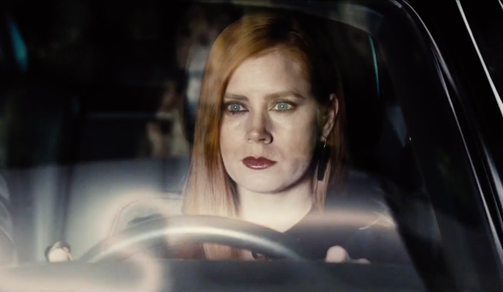

Guía de Películas en Netflix: Mis favoritas por género
¡Bienvenido a mi espacio de cine! 🎥🍿
쮸칰n no decides qué ver en Netflix? ¡No te estreses!
En esta página encontrarás una corta pero detallada
selección de películas, divididas por género, con mis
recomendaciones personales. Aquí no hay una
critica profesional, solo mi perspectiva como amante del cine
para ayudarte a descubrir joyas que quizás no sabías que
existían o recordarte clásicos que valen la pena volver a ver.
Así que prepárate para explorar títulos que te harán reír, llorar, reflexionar
o simplemente disfrutar de una gran noche de películas. Te invito a disfrutar de la
experiencia!
En medio de la Segunda Guerra Mundial, un niño alemán entabla una amistad inocente
con un niño judío tras una cerca de un campo de concentración, una conexión que desafía el horror
que los rodea.
En busca de la felicidad (2006)
La inspiradora historia de un padre que, a pesar de la pobreza y el desempleo,
lucha incansablemente para construir un futuro mejor para él y su hijo pequeño.
Vidas de papel (2021)
Mehmet, un recolector de basura en Estambul, encuentra a un niño abandonado en su
lugar
de trabajo. Lo que comienza como un acto de bondad cambia la vida de ambos para siempre.
The Reader: Una pasión secreta (2008)
Michael, un joven alemán, vive un romance con Hanna, una mujer mayor. Años después,
sus
caminos se cruzan en un juicio por crímenes de guerra, revelando secretos que cambiarán sus vidas.
Adú (2020)
En un relato conmovedor, tres historias paralelas se entrelazan: un niño africano
huye desesperadamente en
busca de un futuro mejor, un activista enfrenta las duras realidades de la inmigración, y un guardia
fronterizo lidia con un dilema moral.
Animales nocturnos (2016)

Una galerista insatisfecha con su vida recibe un manuscrito de su exesposo, un
escritor al que dejó años atrás.
La novela, oscura y violenta, es una metáfora de su relación pasada y la lleva a confrontar su
pasado, sus elecciones y el costo de sus decisiones.
Adiós señor Haffmann (2021)
En la Francia ocupada por los nazis, el joyero Joseph Haffman, judío, se
esconde en casa de su empleado François. Un acuerdo que empieza como un acto de supervivencia
desata tensiones y dilemas morales en medio de la guerra.
Recomendaciones Suspenso
El Ángel de la Muerte (2022)
Basada en hechos reales, narra la historia de un enfermero acusado de ser
responsable de múltiples
muertes en el hospital donde trabaja. Una colega, entre la lealtad y la verdad, se une a la
investigación para desenmascarar la aterradora verdad.
El Diablo a Todas Horas (2020)
En un pueblo rural de Ohio, varias vidas se cruzan en una espiral de violencia, fe y
corrupción. Entre predicadores oscuros y
veteranos traumatizados, se teje una historia sombría sobre el mal humano.
Corre (2020)
Chloe, una joven en silla de ruedas, comienza a sospechar que su madre la controla
más de lo que parece. En una carrera contra el
tiempo, descubre verdades impactantes sobre su vida y su salud.
Los crímenes de la academia (2022)
Un detective veterano y un joven Edgar Allan Poe unen fuerzas para resolver una serie
de asesinatos macabros en una academia militar.
Misterios y giros inesperados llenan esta intriga gótica.
Recomendaciones Romance
Cuestión de tiempo (2013)
Tim descubre que los hombres de su familia pueden viajar en el tiempo. Usando este
don, busca mejorar su vida
amorosa y conquistar a Mary, pero pronto aprende que el tiempo no puede resolver todos los problemas
del corazón.
Si yo tuviera 30 (2004)
Jenna, una adolescente de 13 años, desea desesperadamente ser adulta. Su deseo se
hace realidad, y al
despertar como una exitosa mujer de 30 años, descubre lo que realmente importa en la vida.
Como perder a un hombre en 10 días (2003)
Andy, una periodista, escribe un artículo sobre cómo ahuyentar a un hombre en diez
días. Mientras tanto, Ben,
un publicista, apuesta que puede enamorar a cualquier mujer en el mismo tiempo. Sus planes chocan en
esta divertida comedia romántica.
Amonita (2020)
En el siglo XIX, Mary, una paleontóloga solitaria, inicia una intensa relación con
Charlotte, una joven casada que busca
sanar. Juntas encuentran en el amor un refugio para desafiar las convenciones sociales.
Recomendaciones Basadas en Hechos Reales
Maudie (2016)
La historia de Maud Lewis, una mujer con artritis severa que encuentra en la pintura
una forma de expresar su mundo interior.
Su talento la lleva a convertirse en una artista reconocida, mientras construye una vida
inesperadamente feliz con su esposo, Everett.
El pianista (2002)
Wladyslaw Szpilman, un talentoso pianista polaco, lucha por sobrevivir durante la
ocupación nazi en Varsovia. A través de su
música y su instinto de supervivencia, ofrece un poderoso testimonio de la resistencia humana en
tiempos de guerra.
El Rey (2019)
El joven príncipe Hal, renuente heredero al trono inglés, se ve obligado a asumir el
poder como Enrique V tras la muerte de
su padre. Entre intrigas, guerras y alianzas, debe enfrentarse a los desafíos de liderar un reino
dividido.
El niño que domó el viento (2019)
Basada en la vida de William Kamkwamba, un joven de Malaui que, enfrentando la
hambruna, construyó un molino de viento para
salvar a su comunidad. Una inspiradora historia de ingenio, resiliencia y esperanza.
Recomendaciones Emotivas
El Matrimonio Loving (2016)
Inspirada en una historia real, esta película relata la lucha de una pareja
interracial por su derecho a casarse en los
Estados Unidos de los años 60. Un retrato poderoso de amor y resistencia contra la injusticia.
Mi primer beso (1991)
Vada, una niña curiosa y sensible, vive su primer amor y enfrenta la pérdida en un
verano inolvidable. Una película llena
de emociones sobre el crecimiento y la importancia de la amistad
La razón de estar contigo (2017)
Un perro llamado Bailey reflexiona sobre el significado de la vida mientras
experimenta diferentes reencarnaciones.Su conexión con los humanos a lo largo de las décadas
es un recordatorio conmovedor del amor incondicional.
BABEL (2006)
Tres historias entrelazadas, ambientadas en diferentes países, muestran cómo una
tragedia conecta a personas de distintas culturas. Un viaje emocional que explora la comunicación,
el entendimiento y las diferencias humanas.
Recomendaciones Militares
Sin novedad en el frente (2022)
Un joven soldado alemán vive los horrores y la deshumanización de la Primera Guerra
Mundial en el frente occidental. Un poderoso retrato de las consecuencias devastadoras de la guerra.
Inquebrantable (2014)
La increíble historia de Louis Zamperini, un atleta olímpico convertido en soldado,
que sobrevive en un bote salvavidas durante semanas y enfrenta duros años como prisionero de guerra japonés.
Beasts of No Nation (2015)
Un niño es obligado a convertirse en soldado en un país africano desgarrado por la
guerra civil. Una impactante narración sobre la pérdida de la inocencia y la brutalidad de los conflictos armados.
La batalla olvidada (2020)
Tres historias entrelazadas, ambientadas en diferentes países, muestran cómo una
tragedia conecta a personas de distintas
culturas. Un viaje emocional que explora la comunicación, el entendimiento y las diferencias
humanas.
Recomendaciones Anime
El increíble castillo vagabundo (2004)
Sophie, una joven que vive una vida tranquila, es víctima de un hechizo que la transforma en
una anciana. Su camino la lleva al castillo de Howl, un mago enigmático. Juntos, descubren el poder del amor, la valentía y la autoaceptación.
La princesa Mononoke (1997)
Ashitaka, un joven príncipe, se encuentra en medio de un feroz conflicto
entre los humanos, y los dioses de la naturaleza, encabezados por San, la princesa Mononoke.
Una historia épica que explora temas de destrucción ambiental, redención y coexistencia.
El regreso del gato (2002)
Haru, una chica ordinaria, se ve arrastrada al reino de los gatos tras salvar la vida
de un felino. Allí, debe descubrir su valentía y astucia para regresar al mundo humano. Con humor,
magia y un encantador desfile de personajes, esta película es una celebración de la amistad y la identidad.
El viaje de Chihiro (2001)
Chihiro, una niña atrapada en un mundo mágico lleno de espíritus y criaturas fantásticas, se embarca en una increíble aventura para
salvar a sus padres. Una odisea donde aprende valiosas lecciones sobre la valentía, la lealtad y la importancia de ser fiel a uno mismo.
El mundo secreto de Arrietty (2010)
Arrietty, una joven de una familia diminuta que vive bajo el suelo de una casa, desafía las
reglas para explorar el mundo humano. Su encuentro con un niño humano enfermo desencadena una amistad inesperada que pone en riesgo su vida secreta.
El recuerdo de Marnie (2014)
Anna, una adolescente solitaria con problemas de autoestima, descubre una antigua mansión
abandonada y conoce a Marnie, una chica que parece esconder un pasado lleno de secretos.
Esta obra explora temas como la identidad, el perdón y el poder de los recuerdos.
Belle (2021)
Suzu, una adolescente tímida, encuentra en el universo virtual "U" la confianza para transformarse
en Belle, una cantante adorada por millones. Allí conoce a "La Bestia," una figura misteriosa con un dolor oculto.
La historia explora el poder de la conexión y la autoaceptación.
Se levanta el viento (2013)
un joven ingeniero aeronáutico apasionado por crear aviones. Ambientada en un Japón
en transformación, la película entrelaza su lucha por cumplir sus sueños con los retos de la guerra y
una conmovedora historia de amor.
Suzume (2022)
Suzume, descubre un misterioso poder que le permite cerrar puertas
mágicas conectadas a desastres naturales. Suzume aprende a enfrentar su pasado, proteger el presente y construir su futuro.
La tumba de las luciérnagas (1988)
Dos hermanos, Seita y Setsuko, enfrentan los horrores de la Segunda Guerra Mundial en Japón.
Mientras luchan por sobrevivir en un mundo devastado, su relación se convierte en un poderoso testimonio de amor incondicional.
Nausicaä del Valle del Viento (1984)
En un mundo devastado por la contaminación, Nausicaä, una princesa visionaria, lucha por salvar su hogar y
restaurar la armonía entre la humanidad y la naturaleza. Una narrativa llena de acción, sensibilidad y mensajes ecológicos.
Kiki: entregas a domicilio (1989)
Kiki, una joven bruja en busca de independencia, se muda a una nueva ciudad para poner a prueba sus habilidades.
Mientras enfrenta desafíos, aprende valiosas lecciones sobre confianza, perseverancia
y la importancia de encontrar su lugar en el mundo.
Recomienda tus Películas
Me te gustaria saber si consideras que debería agregar alguna película que te guste y no se
enceuntra en la sección de recomendaciones, puedes dejar tu sugerencia en el siguiente formulario!